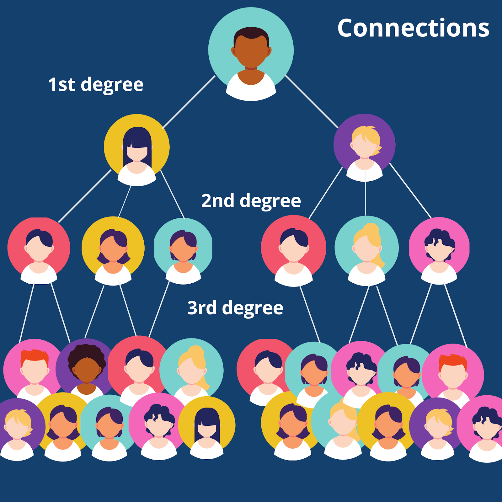
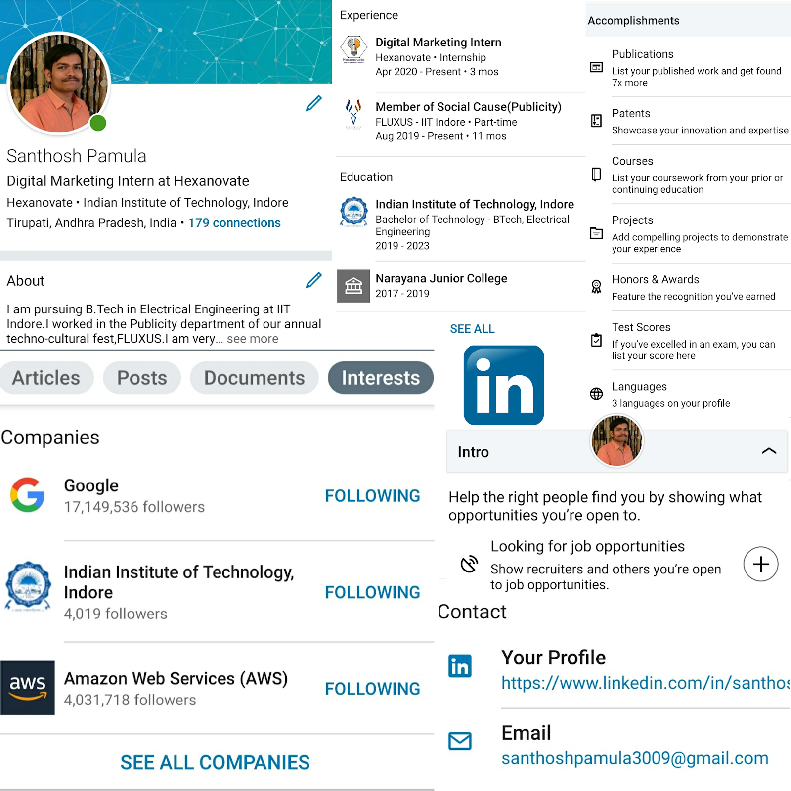
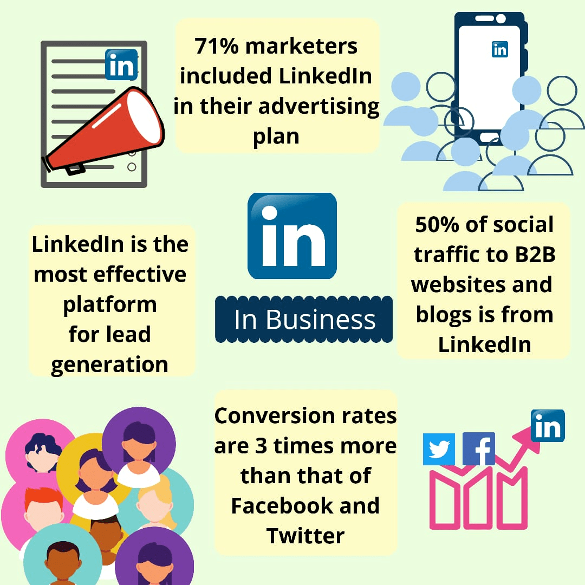

When asked to name some social media platforms, we have Instagram, Facebook, Twitter, Snapchat, Tiktok and an endless list on our minds.
Honestly answer the questions below…
Aren’t you fed up of those endless scrolls and story updates of how people and celebs are enjoying their holidays?
“John is feeling Excited with James”... really? Does this matter to you? Who checked in the PVR Cinemas today? What have you to do with it?
Aren’t you fed up of all those damn cool filters and stickers?
And then when you get real upset about what you are doing by liking someone's story or status update, that is when you are trying to make sense of all of your social activity and your endless scrolls.
After all such social drama, when for once finally you decide to do something of real worth in your life or career, that is when you opt to ban social media or uninstall them. But still every second moment you get a fear of missing out (FOMO) for your social activity, making your minds run more crazily behind it like never before.
Let me tell you some great news. You missed out one honey spot of social media, which will still keep you connected to the social world and would accompany you even when you are damn serious about your life or your career.
Yes, it's a social media but the one which you would never want to uninstall or run away from.
A media alert, don’t jump off the content below just because you have some presumptions about it. I am sure you don't know what miracles it has for you.
Drum rolls on… The Block-buster of Social Media…
The few minutes that you spend on this blog is surely going to make you fall in love with LinkedIn and you are going to experience miracles ahead!!
Well Instagram and Facebook give you social presence, Snapchat helps you recreate your moments, Twitter keeps you updated about the break through gossips around the world.
But what about your “Digital Reputation”?
How do these social platforms build your reputation, how do they enhance your professional presence?
Updates from the celebrities I follow on Instagram, trending hashtags in Twitter, cool filters were my addictions. Endless scrolling, feeling elated and depressed soon became my habits.
Literally, I used to spend two hours on an average per day for recreation on social media. Realising that this isn't adding any value to my life, I opt to ban social media. It was very hard to get rid of them. I searched for an alternative where I could change my addiction but not my habits.
This is where LinkedIn stands these days. One single solution to your “Social presence FOMO”, for your “Professional Identity”, for your “Digital Reputation”, place to “Grow your Business”, get in touch with professionals and investors, place to brag about your professional growth and much more. Still keeping your habit of endless scrolls and addiction to trending hashtags.
Interesting?? Want to know about LinkedIn?...Well, Go on!!
LinkedIn is no longer a new platform today. Though it was out there even before the biggies took over the world, it rose into prominence in the past few years.
Founded in 2002 by Reid Hoffman, it is a perfect place to grow a robust professional network and an amazing platform for the job seekers.
With its unique service, it has gained popularity all around the globe. Later in 2016, Microsoft recognized LinkedIn for its professional network system and acquired it for $26.2 billion.
Today, LinkedIn has over 690 million users and spread around 150 countries with professionals from every industry. Slowly, people started to post related to hacks, tips, facts and motivation, making it similar to social media though not ignoring its core values of professionalism.
We all are fond of naming and taming our relationships with the people we want. LinkedIn does have a special name to do it...It is CONNECTIONS.
Facebook has friends
Instagram has followers
Twitter has followers
LinkedIn has connections
In LinkedIn, the people who you connect with are known as connections. They are divided into 3 degrees.

1st degree: People who accept your invitations to connect
2nd degree: People connected to your connections
3rd degree: People connected to your 2nd degree connections
Like in all other social media handles, your connections can have access to your activity feed while all other connections could just view your profile.
An interesting thing about connections of LinkedIn is that if you even sneeze in here all your connections around the world(if you have) are going to get notified about your updates. One thing that differentiates it from other social media handles is if your connections react to any post, you are going to have that post in your feed with a tagline of "X reacted to Y's post".
LinkedIn algorithm gives more priority to your connections. Even if you follow people whom you admire, your home tab's top posts get filled with the reactions of people you are connected to. Among all your connections LinkedIn gives priority to those connections who you engage with often.
Active connections will fetch you good results if you are thinking to use LinkedIn to grow your business.
LinkedIn, known for its amazing features, attracts people to post amazing images, videos, articles, etc. LinkedIn allows you to follow people and companies you admire for their content. You can even access the e-books uploaded by them.
LinkedIn slideshare is one such feature, where on average 400,000 presentations are uploaded per month. How cool it is to have a separate social media handle where every single post will add value to your life.
It is home to many influencers who post amazing content related to technology, motivation, marketing, personal experience, etc.
Everyone in the world looks after LinkedIn when they are asked about content relevant to the professional world. 90% of the executives believe that LinkedIn is the monarch here.
The world today has no dearth of people from whom you could get inspiration. LinkedIn is one such place where you can find a bunch of them. Whether it might be the one related to your academics or it might be related to solutions that you are looking for, you could always find the right person or group where you can find the right solutions. Follow them, join LinkedIn groups and grow your network in the same way, grow your knowledge too!!
For the job seekers, LinkedIn is a good start. LinkedIn has a dozen amazing features to prepare your online resume. You can add your experiences, Alma mater, skills, accomplishments, languages you speak, organizations you work at, etc. The amazing part of this online resume is that you could be endorsed for your skills by your peers or the people you work with.
Frame your "about" section in a professional way and add actively looking for jobs. You will be updated by LinkedIn itself about the jobs and give the notifications about the places where you could fit according to your resume...Cool right!!

After having your account, you will be asked to add a minimum of five skills. There are some skills included in it where you can take a skills quiz on the skills you chose.Those skills include programming languages, AutoCAD, Microsoft tools, Computer Graphics, AWS.
A typical assignment consists of 15 to 20 multiple choice questions. You have to complete it in one session. If you pass the quiz you will be given a badge that will be displayed on your profile in LinkedIn recruiter and LinkedIn Jobs. However, it is your wish to reveal your results.
It is always good to have your skills certified or verified if you are to approach any company or person for a job or for internships. LinkedIn says that candidates who complete LinkedIn skill assessment are more likely to get hired (approximately 30%).
LinkedIn's users also consist of people who are actually decision makers or the key people at their company. Even before you start actual marketing of your product or service, it is important to know about your competitors and their strategies in order to foster your own.
Making LinkedIn a part of your strategy could benefit you a lot as more than 80% of B2B leads come from LinkedIn. It is considered to be more effective than other social media like Facebook, Twitter handles for generating leads.
LinkedIn has amazing tools and plans which you could implement for improving your business. It has four different price tiers, and they are worth paying of

Spending even one minute on LinkedIn can benefit you in many ways. It's amazing features are proof of it. It helps us to know more about the professional world, how it works, how we should manage them and how to optimize ourselves.
LinkedIn is an application which acts like an interface between the recruiter and job seeker. It benefits both sides where the recruiters can find young talent more easily and in the same way job seekers too.
LinkedIn was an underrated world back then until the people got to know about its true benefits. LinkedIn's contribution to the marketing world and B2B is invaluable and modern marketers have to incorporate LinkedIn into their lives and make good use of it.
Nevertheless, you still maintain your social presence, get the sense of liking, commenting and sharing other’s updates. You never miss an opportunity to run out of social contact just for the sense of banning social media. Every bit of scroll would add value to your life.
If you are not on LinkedIn...Well, what are you waiting for...Go on!!
Follow us on LinkedIn and get going to recreate your “Digital Reputation”.
Love your Endless Scrolls and shift to LinkedIn!!!